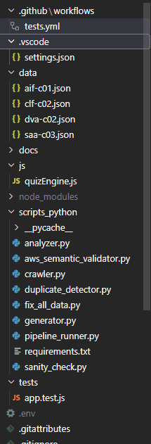
AWS Certification Simulator
Python
Gemini AI
AWS
Desenvolvedora Web | Análise e Visualização de Dados
Desenvolvi uma base sólida em comunicação, visão estratégica de negócios e foco em resultados.
Construindo o alicerce técnico e o pensamento lógico essenciais.
Unindo a visão de negócio com a proficiência técnica para transformar dados.
Análise de Sistemas e especialização em Data Science. Certificações AWS e Power BI.
5+ anos em análise de dados, desenvolvimento web e automação de processos com Python.
Transformação digital, BI, Machine Learning e soluções cloud-native com AWS.
Consultora de Vendas
Vendedora
Mkt & Vendas
Analista de Dados

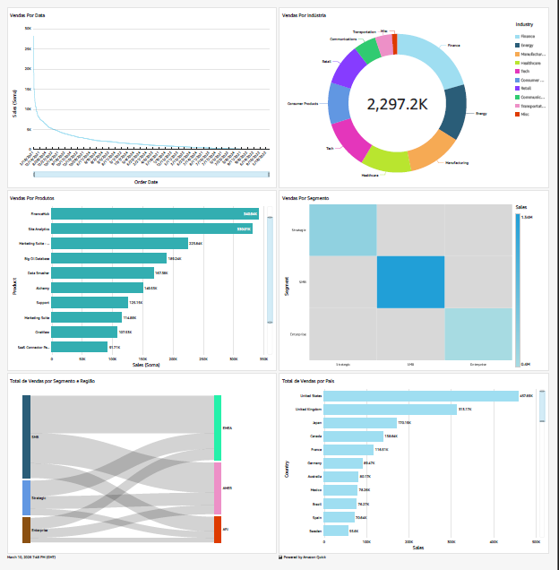
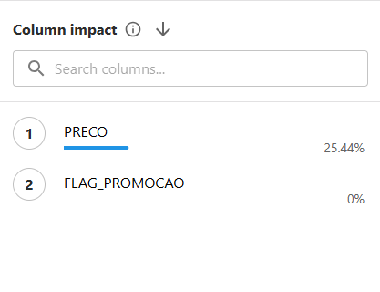
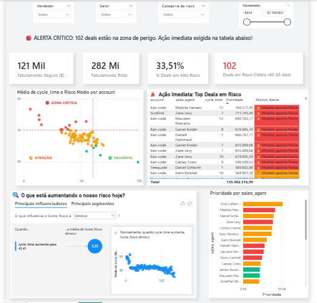
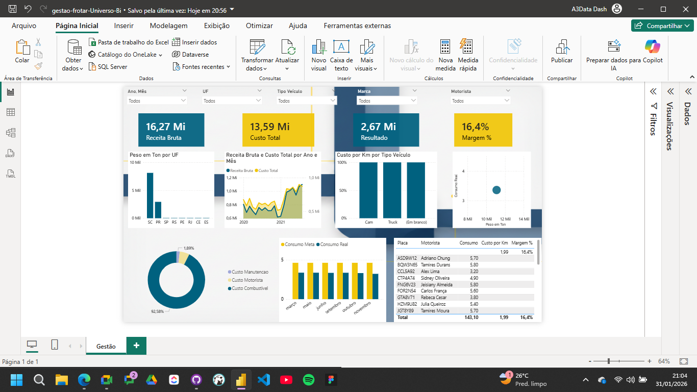

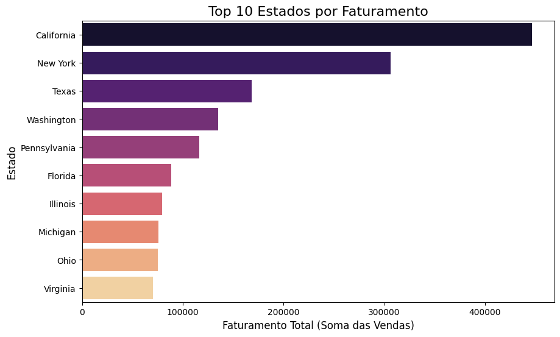
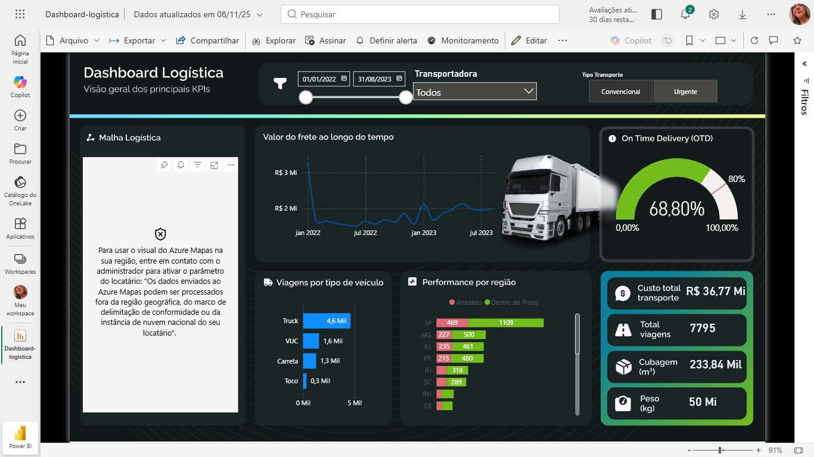
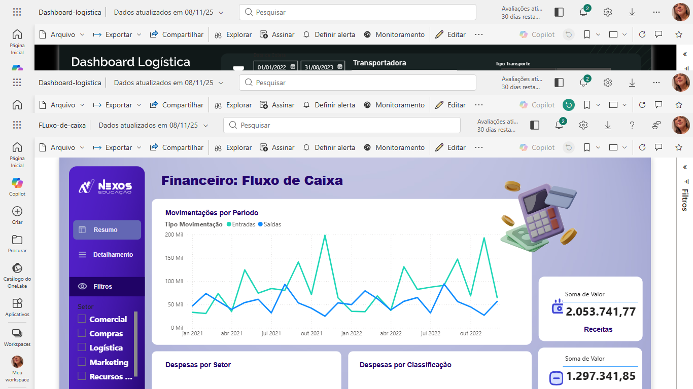
Página de links agrupados responsiva para centralização de contatos e redes sociais profissionais.
Interface de autenticação moderna com design responsivo (Mobile First) e CSS Media Queries.
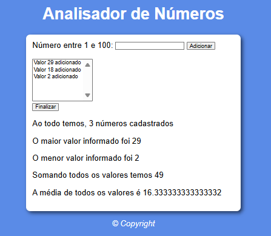
Aplicação interativa para análise estatística de vetores numéricos.
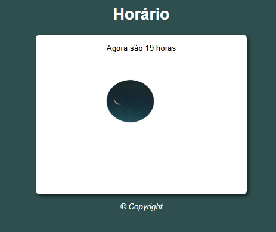
Consumo de API RESTful para busca e exibição de dados climáticos.
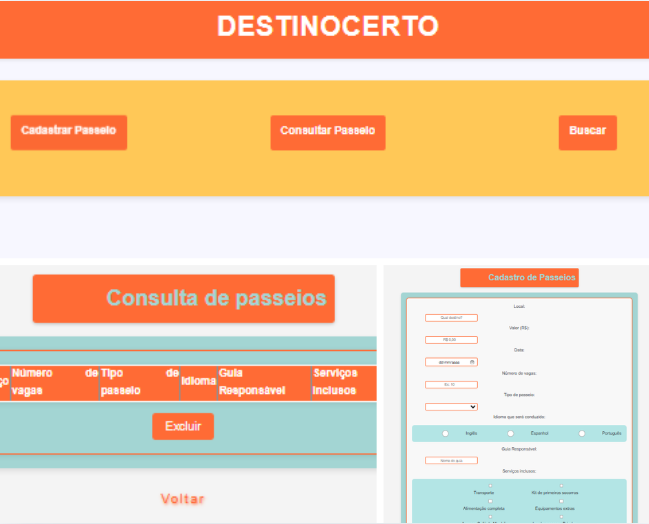
Plataforma com backend em Node.js e banco de dados SQLite.
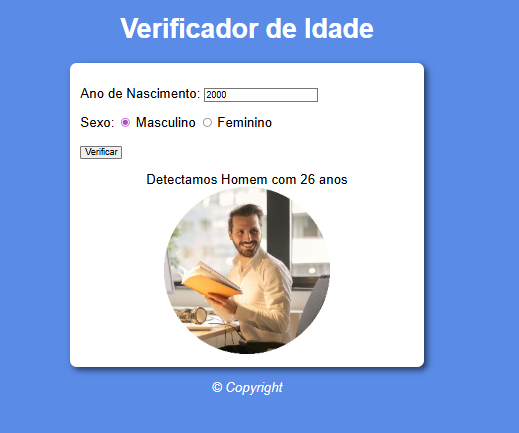
Aplicação interativa que calcula a idade e identifica o estágio de vida, alterando dinamicamente a interface gráfica.
 /karlarenata-rosario/
/karlarenata-rosario/